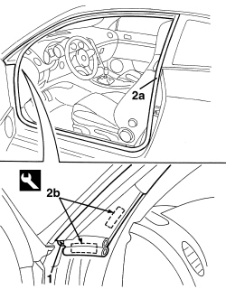
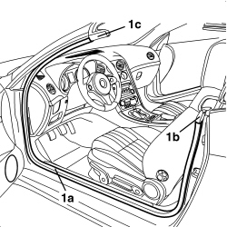

7005A34 FRONT SIDE DOOR COMPARTMENT SEAL - R.R
- Path
- Procedures > 70 FITTINGS > 7005 PASSENGER COMPARTMENT FRONT SIDE DOORS > 7005A FRONT DOOR ASSEMBLY > 7005A34 FRONT SIDE DOOR COMPARTMENT SEAL - R.R
- Kind
- repair procedure (removal / refitting; the operation number is the code)
- Applies to
- all engines; all production periods
- Interactive page
- https://sloeber94.github.io/elrnDB-aBrrSpdr/en/#/946002494
Applies to: all engines; all production periods
 Removing
Removing
 Refitting
Refitting- Open the door.
1. Release the retaining button using the special tool.
Tool | Description | Function | Validity |
|---|---|---|---|
1823015000 | Knife | Retainer removal |
2. Release the seal (2a) along the entire perimeter of the door housing and detach the adhesive strips (2b) from the bodyshell.

Applies to: all engines; all production periods
Refitting
Removing- Check that the seal is not damaged.
- Fit the seal in place, starting from the upper rear corner.
- Attach the adhesive strips, after having cleaned and degreased the area involved on the bodyshell using heptane.
- Fit the retaining button.
- Check that the door shuts properly and is correctly aligned with the bodywork.
Applies to: engines: 2.2 JTS, 3.2 JTS; all production periods; only with equipment: Spider
Removing
Refitting- Open the door.
1. Remove the door housing seal (1a), releasing it from the perimeter housing and from the end joins (1b) and (1c).

Applies to: engines: 2.2 JTS, 3.2 JTS; all production periods; only with equipment: Spider
Refitting
Removing- Check that the door housing seal is not damaged.
- Place the door housing seal in position, attaching it to the perimeter housing and the end joins.
- Check that the door and the window close properly.
Topics that link to this page (19)
- T001 WIND NOISE FROM THE FRONT DOORS
- V005 FRONT DOOR WATER PENETRATION
- V012 HOOD WATER PENETRATION
- 7005OA FRONT DOOR WIND NOISE LOCALISATION
- 5570T61 MULTI-FUNCTION AERIAL - R.R.
- 5580C50 WINDOW BAG MODULE (ONE) LH OR RH - R.R
- 7030L10 TRANSPARENT ROOF PANEL - R.R.
- 7030L11 TRANSPARENT ROOF PANEL - R.R. FOR VERSIONS WITH SUN BLIND
- 7030L12 TRANSPARENT ROOF PANEL COVER - R.R.
- 7030L20 SUN BLIND ASSEMBLY - R.R.
- 7030L21 SUN BLIND ASSEMBLY - ALIGNMENT
- 7030L22 SLIDING SUN BLIND - R.R.
- 7030L23 SUN BLIND CROSSMEMBER - R.R.
- 7030L24 SLIDING BLIND MOVEMENT MOTOR - R.R.
- 7030L25 SLIDING BLIND DRIVE CABLES - R.R.
- 7030L26 SLIDING BLIND RETAINING CLIP (ONE), LEFT OR RIGHT - R.R.
- 7035C14 FIXED REAR SIDE WINDOW (ONE) LEFT OR RIGHT - R.R INCLUDES CLEANING HOUSING
- 7040H10 ROOF PANEL LINING - R.R.
- 7055A12 RAIN GUTTER MOULDING ON ROOF - R.R.